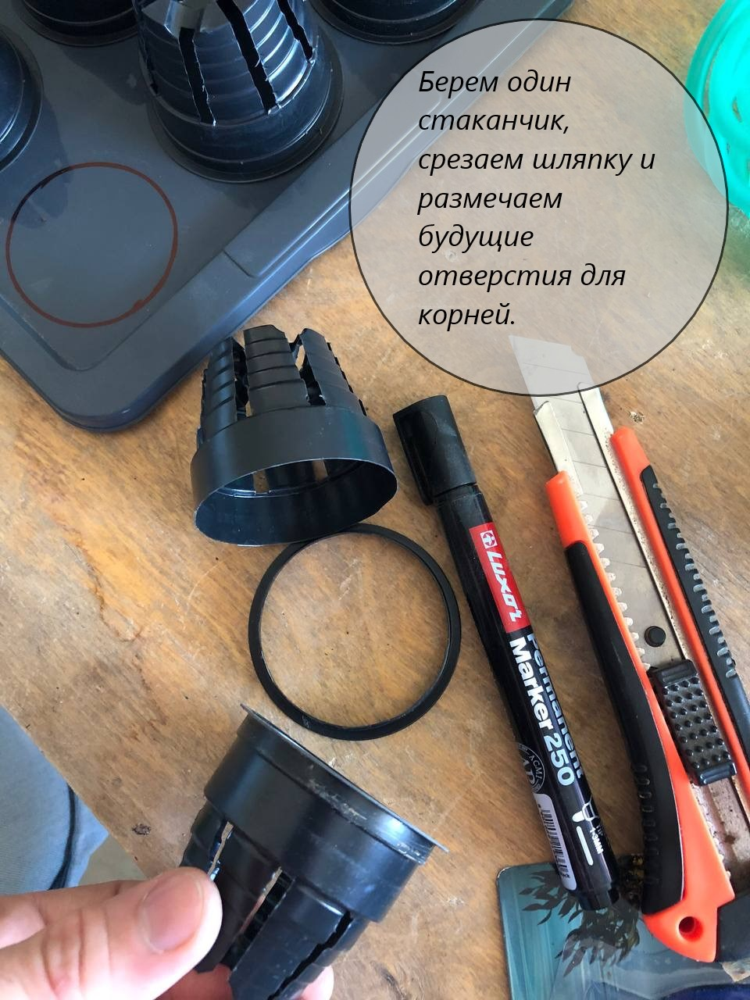
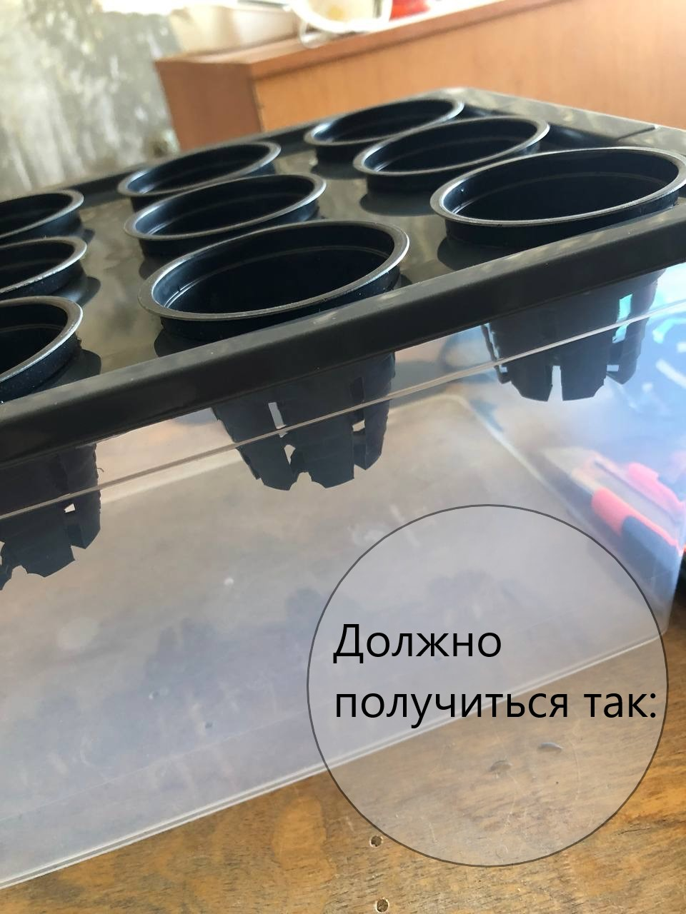
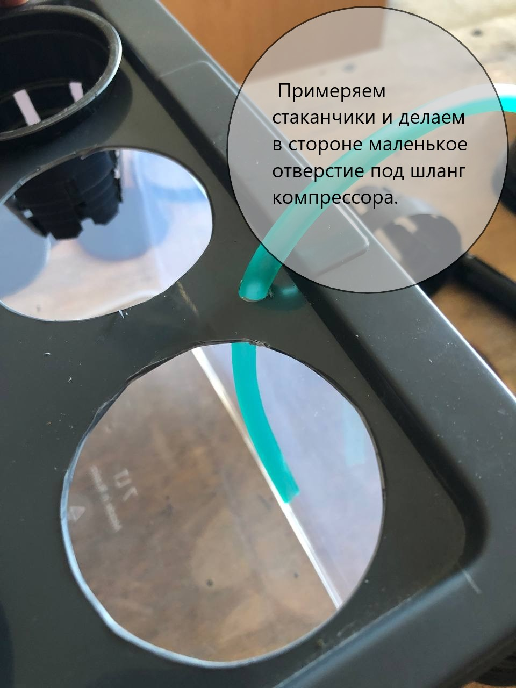
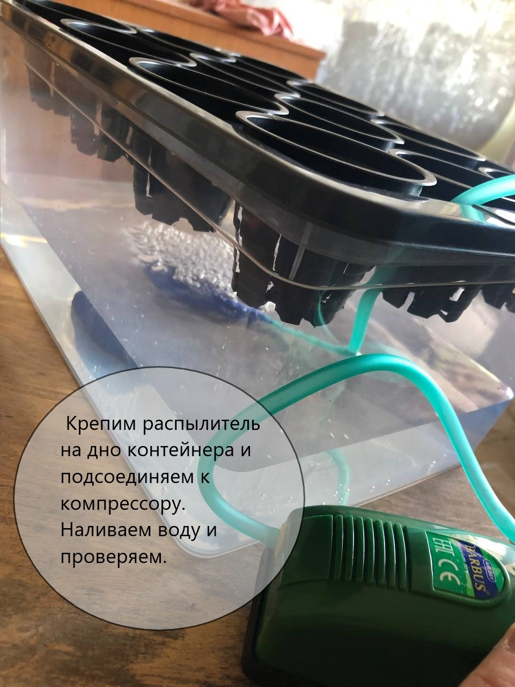

🌱Такая компактная и бюджетная (на момент закупки комплектующих данная установка обошлась в 1500 рублей.) гидропоника - отличный вариант для культивации салатов, петрушки и другой неприхотливой зелени.
🌱Это хороший вариант для старта, так как закрепив и отработав основные принципы на маленькой установке, можно повторить уже в более крупном размере и под любые культуры!